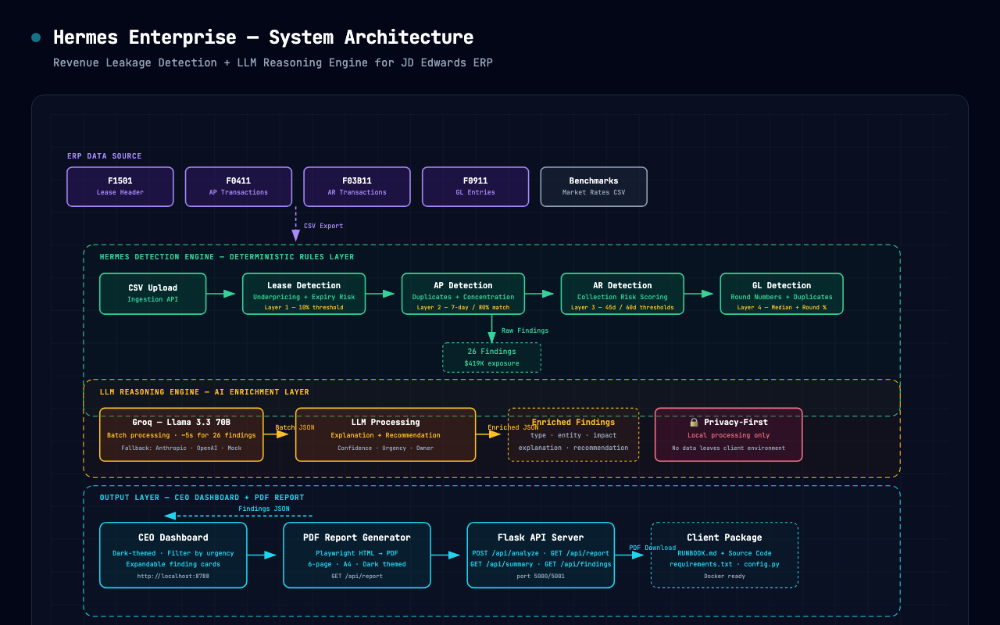

Revenue Leakage Detection · Cost Anomaly Identification · Lease Optimisation
Cushman & Wakefield — Confidential ProposalHermes Enterprise is an AI-powered financial intelligence platform that connects directly to your JD Edwards ERP data to automatically surface revenue leakage, cost anomalies, and lease optimisation opportunities — before your team finds them the hard way.
Built on a deterministic detection first, LLM reasoning second architecture, every finding is traceable to source data and auditable. The system runs locally inside your environment — your financial data never leaves your network.
Commercial real estate portfolios managed on JD Edwards generate thousands of financial transactions every month. The data needed to identify financial risk lives in four JDE tables — but no standard reporting tool connects the dots.
Properties are renewed below market rate without anyone noticing. Each 10% shortfall on a $500K/year lease costs $50,000 annually — compounded over renewal terms.
AP teams processing high volumes miss exact and near-duplicate invoices. Manual reconciliation catches some — but not all, and not before payment runs.
Outstanding invoices age without escalation. Cash flow erosion from uncollected receivables is invisible until it materially impacts working capital.
Round-number journal entries and duplicate posting lines are manually reviewed on a sample basis — leaving exposure for the entries nobody looks at closely enough.
The system integrates with JDE through standard CSV exports — no database credentials, no ETL pipeline, no IT project. Your team exports four JDE tables on a schedule, drops them into Hermes, and receives a full intelligence report.

Compares contract rent against market benchmarks by location and asset class. Flags properties where current rent is more than 10% below market.
Scans invoice transactions for exact and near-duplicate patterns within a 7-day window at 80%+ amount match. Flags vendor concentration above 30% of total spend.
Scores outstanding invoices by days-since-invoice and historical payment behaviour. Triggers escalation workflows for accounts exceeding 45-day and 60-day thresholds.
Detects round-number journal entries (potential manual overrides) and duplicate line items posted across periods. Complements Layer 2 AP detection with full ledger coverage.
The following findings were generated from synthetic JDE test data. Real client data will produce findings specific to your portfolio — with actual dollar amounts tied to actual contracts.
| Urgency | Type | Entity | Issue | Impact |
|---|---|---|---|---|
| High | Lease Underpricing | Collins St Tower, Unit 8A | Current rent 18.7% below market — $31,200/yr below comparable rate | $31,200/yr |
| High | AP Duplicate Payment | Vendor: Office Essentials Pty Ltd | Invoice INV-2024-0847 paid twice within 5 days — identical amount | $4,872 |
| High | AR Collection Risk | Customer: TechCorp Holdings | 3 invoices overdue 67 days — total outstanding $127,400 | $127,400 |
| Medium | Lease Expiry Risk | Pitt St Tower, Floors 12–15 | Lease expires in 52 days — no renewal documentation on file | $180,000/yr |
| Medium | Vendor Concentration | Vendor: Capital Electrical | 34% of total AP spend with single vendor — concentration risk | Policy breach |
| Low | Early Payment | Vendor: Urban Maintenance Co. | Paid 18 days early — missed float benefit of ~$890 | $890 |
Hermes Enterprise is deployed as a self-contained client package. A typical implementation involves connecting your JDE environment, validating data mappings, and running the first analysis — all within four weeks.
Review JDE table structures (F1501, F0411, F03B11, F0911). Map field names to Hermes detection schemas. Validate CSV export format with your IT team.
Weeks 1–2Run first analysis on historical data (12-month window). Validate detection thresholds against known issues. Calibrate sensitivity to your portfolio's noise floor.
Weeks 2–3Deploy Hermes in your environment. Connect to live CSV exports or automate via JDE scheduled reports. CEO dashboard deployed on internal server or local workstation.
Week 3Establish weekly or monthly analysis cadence. Findings reviewed in standing finance meeting. Open findings tracked to resolution. New detection rules added as portfolio evolves.
Month 2 onwardsSingle business entity
Multi-entity / portfolio view
Full JDE integration
All plans include a 30-day pilot with full functionality — if you don't see findings worth acting on, you don't pay. Implementation and onboarding are included at no additional cost.
Your financial data never leaves your environment. Hermes runs locally — on a workstation, file server, or internal cloud instance. No data is uploaded to external services. No third-party gets access to your ledger.
Every finding traces back to a specific JDE table, invoice number, or lease record. LLM reasoning adds narrative — but the underlying detection logic is rule-based and inspectable. No black-box AI.
CSV exports from JDE are all that is required to get started. No database credentials, no ETL, no multi-month IT project. First findings within days of engagement signing.
Unlike generic financial audit tools, Hermes is designed specifically for commercial real estate — F1501 lease structures, AP accruals, AR escalation curves, and GL patterns that matter to property managers.
We propose a 30-day pilot on your historical JDE data — at no cost and no commitment.
If Hermes doesn't surface findings worth acting on, we part ways. If it does, you decide.
Proposal valid for 60 days · MIT License · Open-source available for audit